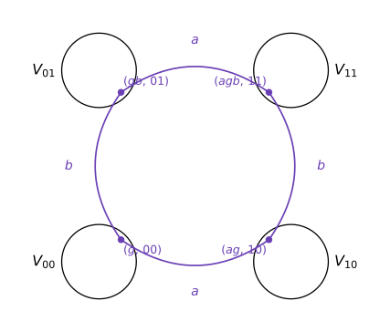
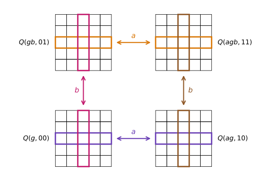
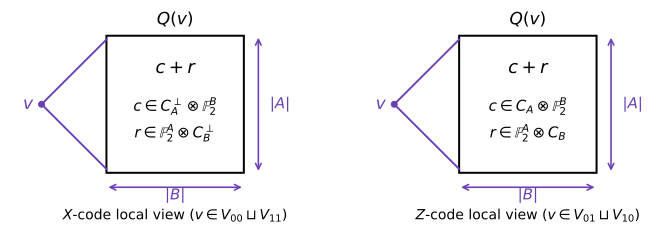

Quantum Tanner Codes
The first asymptotically good quantum LDPC codes which CSS codes with constant rate, constant relative distance, and constant-weight stabilizers were obtained by Panteleev and Kalachev (Asymptotically good quantum and locally testable classical LDPC codes) via notions of products of chain complexes. Quantum Tanner codes, introduced by Leverrier and Zémor (Quantum Tanner codes, Decoding quantum Tanner codes), achieve the same asymptotically code construction through an explicitly two-dimensional geometric picture without use of chain complexes which provides a much simpler perspective on building such codes. They are built on the left-right Cayley complex introduced in the locally testable code construction of (Dinur et al., 2022).
The left-right Cayley complex
Let $G$ be a finite group. Let $A$ and $B$ be symmetric generating sets of $G$, satisfying $A = A^{-1}$ and $B = B^{-1}$, so that each set is closed under taking inverses. We assume that both $A$ and $B$ generate the entire group $G$ and have the same cardinality, $|A| = |B| = \Delta$. The two generating sets may also be chosen to be identical (i.e., $A = B$).
The left-right Cayley complex is defined as a quadripartite graph with vertex set
\[V = V_{00} \sqcup V_{10} \sqcup V_{01} \sqcup V_{11}, \qquad V_{ij} = G \times \{ij\},\]
where each $a \in A$ acts by left multiplication ($A$-edges) and each $b \in B$ acts by right multiplication ($B$-edges): a vertex $(g, 00)$ is joined to $(ag, 10)$ for every $a \in A$ and to $(gb, 01)$ for every $b \in B$, and similarly on the other side.

The four induced bipartite subgraphs are each double covers of ordinary Cayley graphs: the $A$-edge subgraphs are copies of the double cover of $\mathrm{Cay}_L(G, A)$, and the $B$-edge subgraphs are copies of the double cover of $\mathrm{Cay}_R(G, B)$.
The central objects are the squares
\[\{(g, 00),\ (ag, 10),\ (gb, 01),\ (agb, 11)\}, \qquad a \in A,\ b \in B,\ g \in G,\]
and we write $Q$ for the set of all of them. Each square has four vertices and each of the $4|G|$ vertices lies on $\Delta^2$ squares, giving $|Q| = |G|\Delta^2$. The $Q$-neighborhood $Q(v)$ of a vertex $v$ is the set of squares containing $v$. Since a square through $v$ is determined by a choice of $a \in A$ and $b \in B$, we have $Q(v) \cong A \times B$: the $\Delta^2$ squares around a vertex arrange naturally into an $|A| \times |B|$ grid. The key combinatorial fact is that neighboring vertices have grids that overlap in a controlled way:

Vertices joined by an $A$-edge labelled $a$ share exactly the $a$-th row of their grids, and vertices joined by a $B$-edge labelled $b$ share exactly the $b$-th column.
The two Tanner codes
Fix two classical linear codes $C_A$ and $C_B$ of length $\Delta$ (one bit per element of $A$ and $B$ respectively). Qubits live on the squares $Q$. Following the classical Tanner code recipe, each vertex imposes a local code on the $\Delta^2$ bits of its $Q$-neighborhood — and since that neighborhood is an $|A| \times |B|$ grid, the natural local codes are the tensor code $C_A \otimes C_B$ (matrices whose columns lie in $C_A$ and rows lie in $C_B$):

and its dual, the dual tensor code
\[(C_A \otimes C_B)^{\perp} = C_A^{\perp} \otimes \mathbb{F}_2^{B} + \mathbb{F}_2^{A} \otimes C_B^{\perp},\]
whose elements are sums $c + r$ of a matrix $c$ with columns in $C_A^{\perp}$ and a matrix $r$ with rows in $C_B^{\perp}$.

The CSS code is defined by two classical Tanner codes living on the two "diagonal" graphs of the complex. Let $\mathcal{G}_0^{\square}$ be the graph on $V_{00} \sqcup V_{11}$ with an edge for every square (joining its two even-parity corners), and $\mathcal{G}_1^{\square}$ the analogous graph on $V_{01} \sqcup V_{10}$. Then
\[C_0 = \mathrm{Tan}\bigl(\mathcal{G}_0^{\square},\ C_A^{\perp} \otimes \mathbb{F}_2^{B} + \mathbb{F}_2^{A} \otimes C_B^{\perp}\bigr), \qquad C_1 = \mathrm{Tan}\bigl(\mathcal{G}_1^{\square},\ C_A \otimes \mathbb{F}_2^{B} + \mathbb{F}_2^{A} \otimes C_B\bigr),\]
with the $X$-checks of $C_0$ drawn from $C_A \otimes C_B$ at even-parity vertices and the $Z$-checks of $C_1$ drawn from $C_A^{\perp} \otimes C_B^{\perp}$ at odd-parity vertices. Commutation of the stabilizers reduces to a local statement: whenever an $X$-check and a $Z$-check overlap, they overlap on a single shared row or column of their grids, where one restricts to a codeword of $C_A$ (or $C_B$) and the other to a codeword of $C_A^{\perp}$ (or $C_B^{\perp}$) — so their inner product vanishes, and the pair $(C_0, C_1)$ forms a valid CSS code.
Parameters
With $n = |Q| = |G|\Delta^2$ qubits and the standard choice $C_A = [\Delta, \rho\Delta]$, $C_B = [\Delta, (1-\rho)\Delta]$ for a constant $\rho \in (0, 1)$, counting parity checks gives
\[k \geq n - 4|G|\rho(1-\rho)\Delta^2 = (1 - 2\rho)^2\, n,\]
so the code has constant rate whenever $\rho \neq 1/2$. Every check acts on at most $\Delta^2$ qubits and every qubit is acted on by at most $\Delta^2$ checks, so for constant $\Delta$ the code is LDPC.
Distance is where the expander graphs enter. Two ingredients are needed:
- Spectral expansion. The Cayley graphs $\mathrm{Cay}_L(G, A)$ and $\mathrm{Cay}_R(G, B)$ must be Ramanujan, i.e. $\lambda \leq 2\sqrt{\Delta}$. Edges of $\mathcal{G}_i^{\square}$ correspond to a simultaneous choice of an $A$-edge and a $B$-edge, the two adjacency operators commute, and their eigenvalues multiply — so $\lambda(\mathcal{G}_i^{\square}) \leq 4\Delta = 4\sqrt{\Delta^2}$, making the Tanner graphs almost Ramanujan at degree $\Delta^2$. This is precisely the role played by the Morgenstern and LPS Ramanujan graphs in this package.
- Product expansion. Because local views decompose as $x_v = c_v + r_v$, the analysis needs codes where $|x_v|$ cannot collapse through cancellation between $c_v$ and $r_v$ — quantitatively, $\kappa$-product expansion: every local codeword admits a decomposition with $|x| \geq \kappa\Delta(\lVert c \rVert + \lVert r \rVert)$. Random choices of $C_A, C_B$ are product expanding with high probability (Panteleev–Kalachev), which motivates the random constructions below.
Together these yield constant relative distance, completing the good-qLDPC parameter trifecta.
Constructing quantum Tanner codes with this package
Further reading
- Leverrier & Zémor, Quantum Tanner codes and Decoding quantum Tanner codes
- (Dinur et al., 2022) — the left-right Cayley complex and locally testable codes with constant rate, distance, and locality.
- Panteleev & Kalachev, Asymptotically good quantum and locally testable classical LDPC codes
- John Wright's UC Berkeley CS294 Quantum Coding Theory lecture notes (Spring 2024), Lectures 19–20 provides an excellent, accessible exposition of the quantum Tanner construction which this page gratefully follows at a high level.
References
- Dinur, I.; Evra, S.; Livne, R.; Lubotzky, A. and Mozes, S. (2022). Locally testable codes with constant rate, distance, and locality. In: Proceedings of the 54th Annual ACM SIGACT Symposium on Theory of Computing; pp. 357–374.